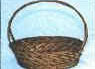

Give Back the Land Hash
Run: #865, November 25, 2002
Hares: Oozing Syph
Scribe: Basket
The Doctors: Swallows My Pride (the GOOD), the Slasher Dr. WHO (the BAD), Oozing
(the UGLY)
The Bleeding Hounds: Summer’s Eve Seven Years Bitch, Eager Beaver ESM
The Four Legged Hounds: Jake, Ben, Mr. Peabody, and Seamus
The Lesser Hounds: Async, Bondo Jovi, Basket Boom Boom, Bird Brain, WIPOS, and KNO
The Guest Hounds: Somebody who shall remain anonymous
The Weather: Cold, Overcast, with a promise of Frozen Rain
Start and OnOn: The Lodge, Rte 123 Lincoln, RI
The Run:
Now you would think, by the theme, that the Hare had an epic in store for us. Certainly a trail of such proportions and magnitude that it would take a Herculean effort to stage. The location aided the hare, with hills, and valleys, and steams and rocky outcroppings, which offered vistas so grand, that one had only tread lightly upon the trail to realize, but would sap the strength of all to finish. The weather was perfect this glorious late autumn evening, temperature just below freezing with light breeze.
And so with great trepidation, we ventured out behind the Lodge heading east, where the first check encountered had some dodging traffic crossing Rte 123, into Lincoln Woods. Others east and west on 123, until Async found flour passing in front of our previous location, then crossing the road and into the woods. The circle jerk was just enough to warm the lungs, sending hot fluid to the legs to dodge the speeding cars, particularly since Jersey Barriers were set up along the road construction, bringing vehicles extremely close to bone and flesh. It also afforded late cumers KNO and Smelly Beaver 9 to arrive, fashionably late, and join the pack.
The trail continued straight uphill; turning left, then right, then straight to the rear entrance roadway. A check here, once again, had most looking in all the wrong directions, when the Bad Doctor found flour crossing the road and around some large boulders. The trail meandered along a well worn path heading east still, ran up and around a large crest, before heading quickly down a steep grade.
Another check at the bottom, sent all over some fallen trees, and then up a hill. Eventually winding up at the burned outbuilding, where a large B was discovered. Now, normally a Beer Check would be well appreciated, especially given the quickly dropping temperatures, but since we had traveled less than a mile, all wondered if we were being duped by the Hare.
It was not so, as after looking for 5 minutes, the hare found no one discovered his hiding place, and generously dug the bag out of the leafy covering. Having been so quickly to arrive at the beer stop, we inquired if there may be 2 beer stops on the trail. The hare replied that there would not, and we started wondering how much effort he afforded this event.
Many songs were sung, and the sweet harmonica, of the Good Doctor accompanied us. Realizing the brevity of the evening, we continued singing and drinking until well after Bondo started out. He tries to save his energy for the grand events, and usually walks back in, whenever opportunity knocks. He often takes a wrong turn, however, and we usually catch up to him before long. Such was the case this evening, as he took the right trail, which turned out to be the wrong trail. We all continued left to the entrance road, and in towards the Lodge.
The Circle was formed by the small pond near the YWCA, and as the hare was given his Down-Down for a slacking effort, and the run was rated a negative 69 to 69th power. Frozen crystals fell on our faces, as it started to lightly rain Down-Downs we also given to co-hare SESYB, the Good Doctor for blowing her harp, and the cohabiting duo of EBSM and KNO. Hashit was give to Bondo. We sang and drank and it was magical looking across the glistening water, with a horse prancing to our tunes, in the paddock. Then we adjourned into the Lodge for food and beer on what may be the shortest hash since the Moon’s.
Give back the land indeed. Considering the Hare’s heritage and militant nature, it should read “Take Back the Land, sadly, the verb ‘GIVE’ better fit the occasion, as in Give us a Better Trail next time.
On On,

Basket Boom Boom